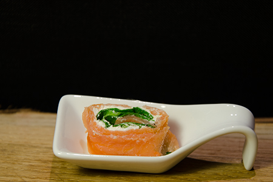

Laxrulle med pepparrot

Ingredienser
200 g kallrökt lax.
100 g färskost naturell
1 bit pepparrot
1 dl bladspenat (köp lösvikt om det finns)
juice från 1/4 citron
salt och peppar
Tillagning
1.Riv pepparrot och blanda med färskosten. Mängden pepparrot beror helt på tycke och smak. Det går såklart att använda färskost med pepparrotssmak, men det kommer bli lite mesigt.
2. Lägg rökt lax i tunna skivor omlott på plastfolie och fördela röran. Salta och peppra. Laxen går lätt sönder när du brer så se till att röran är rumstempererad.
3. Fördela bladspenat, pressa över juice från citron och rulla ihop laxen till en fast rulle med plastfoliet runt om. Ställ i kylen.
4. När rullen stelnat skär upp den i 1-2 cm breda skivor.
Rullen kan med fördel förberedas dagen före och förvaras i kylskåp. Vänta med att skära upp tills det är dags att servera.